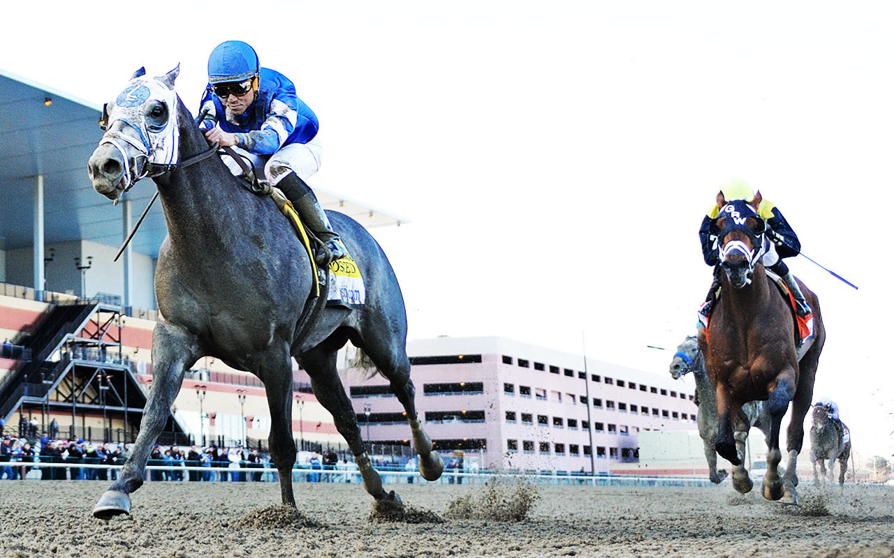

110-00 Rockaway Blvd
Ozone Park, NY 11420
https://www.nyra.com/aqueduct/
Aqueduct Racetrack, also known as the Big A, is the only racetrack in New York City, occupying 210 acres in South Ozone Park in the borough of Queens. Since 2013, the New York Racing Association has invested more than $18 million in capital improvements at Aqueduct, showcasing a continued focus on enhancing the guest experience and improving the quality of racing. One of the most transformational additions was the opening of Longshots, a state-of-the-art simulcasting center and sports bar. Additional improvements include the installation of hundreds of new HD televisions and new HD video boards across the property. In 2017, NYRA embarked on the most significant reconstruction project of the racing surfaces since 1975, replacing the inner dirt course with a second turf course, installing a state-of-the-art irrigation system, and renovating the main track to facilitate year round racing.